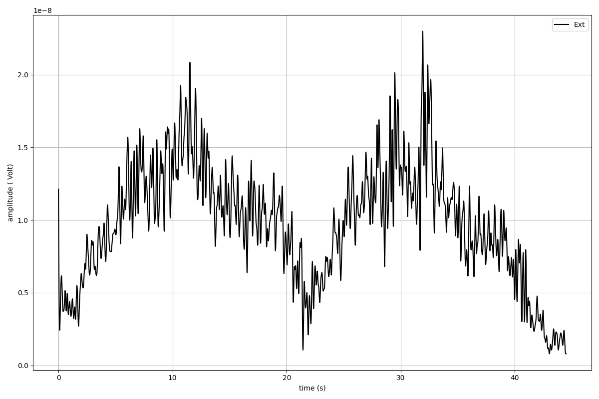
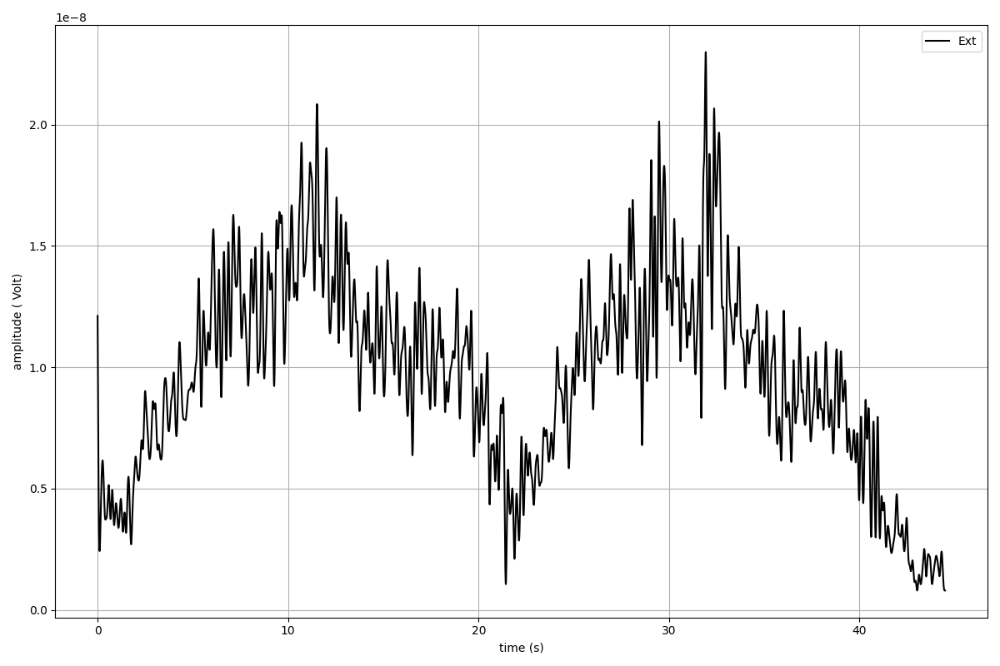

spike2py provides a simple interface to analyse and visualise data collected using Spike2 software and Cambridge Electronics Design (CED) data acquisition boards.
Rather than read .smr files directly, spike2py reads .mat files exported from Spike2. spike2py assumes default export setting are used. This process is simplified by running this script to batch export all .smr files in a directory to .mat format.
spike2py simplifies reading and processing Spike2 data in Python. Users can easily generate individual channel plots, as well as a summary plot of all available channels. In addition, several signal processing methods (e.g. calibration, filtering, interpolating) are available for waveform (i.e. time-series) channels. Finally, trial data can be saved at any point, which allows users to open and continue processing their data from where they left off.
As a brief example, the following snippet of code shows how to:
Read a file
Perform signal processing on the Ext channel with EMG data
Plot the Ext channel before and after processing
>>> from spike2py.trial import TrialInfo, Trial
>>> trial_info = TrialInfo(file="sample.mat")
>>> sample = Trial(trial_info)
>>> sample.Ext.plot()
>>> sample.Ext.remove_mean().rect().lowpass(cutoff=5)
>>> sample.Ext.plot()
 

{kind=link}